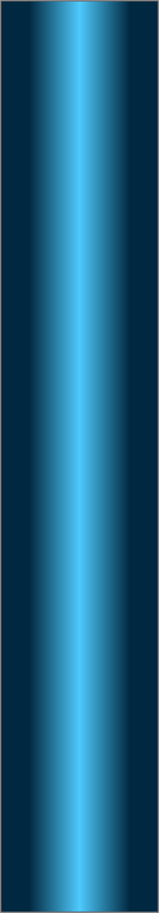
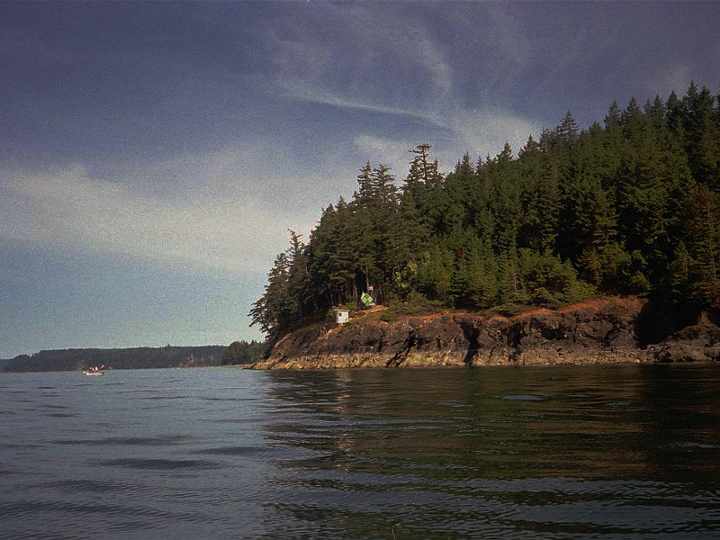
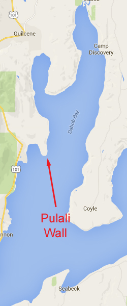
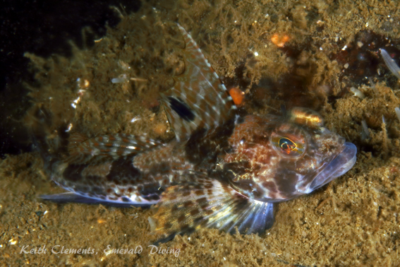
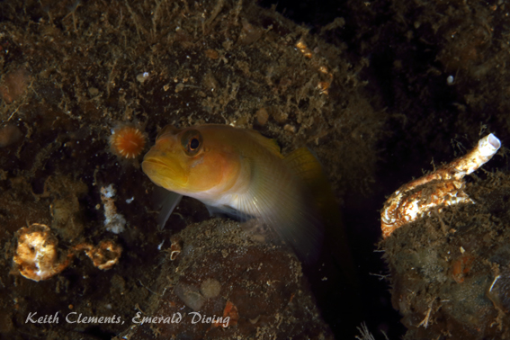
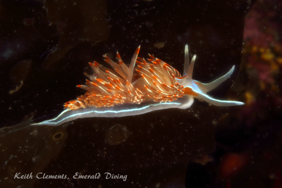

Pulali Wall
Topography: Tall arching rock wall strewn in typical Hood Canal silt. The wall reaches depths of over 170 feet.
Hood Canal marine life rating: 4
Hood Canal structure rating: 4
Diving depth: 70-110 feet.
Highlight: Tall and rugged wall that is fun to explore. I always seem to find some unusually encounters with fish and invertebrates at this site.
Skill level: Intermediate
GPS coordinates:
North Wall: N47° 44.253’ W122° 51.118’
South Wall: N47° 44.164’ W122° 51.175’
Access by boat: Pulali Point is located in north-central Hood Canal. The point is on the west side of Dabob Bay and is marked by a large green and white navigation marker.
Shore access: None
Dive Profile: There are actually two very nice walls at this site within a couple hundred yards of each other. As of July 2016, there is a dive site marker buoy on the south wall, but not on the north wall. As you might guess, both walls are very similar in composition and marine life. To dive the north wall, I anchor on the shallow shelf above the wall by the navigation marker. The shelf slopes away from the shoreline at a moderate pace. The slope gives way to vertical drop-offs at about 40 feet. I explore the wall and its depths at will as there is little current to worry about at this site. I have been to 130 feet with 40 feet of visibility and not seen any sign of the base of the wall.
On the north wall, it is much easier; tie up to the dive site marker buoy and go diving. The wall cascades immediately to the east from the buoy, which is in about 35 feet of water.
The deepest section of the north wall is not overly expansive. However, large rock formations cascade down on either side of the main "wall" giving this dive site a total span of at least 100 yards. Sometimes rock formation are separated by narrow ravines of soft substrate that can be 10 yards wide.
If I want to concentrate on the main wall, I descend to my desired deepest depth and work back and forth across the arching wall as I slowly ascend and explore all sorts of cracks, holes, ledges, and small caves. However, I usually prefer to work across the entire structure, starting to the north. The structure to the north spans further than that to the south. I end my dive on top of the shelf above the main wall, which is where I anchor.
Visibility is often severely restricted in the surface layer of fresh water held captive by Hood Canal. It is common to have 3 feet of visibility in the top 20 feet of water and +30 feet of visibility below 50 feet during spring and summer. I have had dives here with over 50 feet of visibility.
My preferred gas mix: EAN 32
Current observations: Dabob Bay is not subjected to major tidal current. I other dive Hood Canal when I cannot dive current sensitive sites. I have only encountered mild current on the wall during large exchanges. Wind driven surface currents can play a factor when the wind is blowing.
Boat Launch:
Seabeck boat ramp (east side of Hood Canal). Approximately 6 miles from the dive site. This ramp requires a Washington Department of Fish and Wildlife and/or WA Discover Pass. It also offers no dock and a very shallow ramp - I only use this ramp at high tide.
Facilities: None
Hazards:
Depth: This wall drops well below the limits of advanced recreational diving. Good buoyancy and depth management skills are critical to safely diving this sheer site.
Snagging hazards: Derelict fishing gear and discarded fishing line are sometimes found at this site.
Surface current: A wind driven surface current occurs with strong wind.
Poor visibility: Poor visibility often plagues the top of the water column, especially during spring and summer.
Fishing boats: Bottom fishermen like to jig for rockfish and lingcod near this wall.
Marine life: Generally speaking, I am not a big fan of Hood Canal diving. The relatively current-free silty waters just don’t produce the robust marine life that flourishes in other areas of Washington. However, I thoroughly enjoy a few Hood Canal dive sites, and this is one of my favorites.
The appeal of this site is that I always seem to find something unusual. During one dive I watched a small giant nudibranch no more than 5 inches long attack a tube-dwelling anemone with a diameter three times the length of the nudibranch. When the nudibranch launched its attack into the middle of the tube-dwelling anemone, the anemone immediately retracted and pulled most of the nudibranch in with it. Only about an inch of the nudibranch’s tail was sticking out of the anemone. I am not certain who ate who in this battle, but my money is on the nudibranch.
I had my best encounter with a red brotula at this site. I normally only catch a glimpse of these shy fish as they stay buried in their narrow, deep lairs. A brotula on this wall would uncharacteristically come to the entrance of its lair and even let me shine a light on it. As soon as I would raise my camera, it would retreat. If I dropped my camera, it would come to the entrance again. This little dance went on for five minutes as I hoped to get a picture of this rarely encountered species. I wasn’t successful, but was thankful for the encounter.
I have noted several uncommon crabs on this wall, including spiny lithoid and scaled crabs. On another dive I was able to find over a dozen large plainfin midshipmen during my safety stop on the shelf above the wall. The midshipmen were hiding under broadleaf kelp with their tails sticking out in the open.
I have had some decent luck find giant nudibranchs at this site in the soft substrate sections between the rock structure. These areas are typically dominated by tube dwelling anemones. If you are lucky enough to find a giant nudibranch approaching a tube dwelling anemone, stick around and watch the battle.
Like many of the dive sites in Hood Canal, this wall is dominated by orange burrowing sea cucumbers, white sea cucumbers, and a number of anemones and zoanthids. Rockfish population on either wall are very impressive as a result of the ban on bottom fishing in Hood Canal years ago. Decent aggregations of Puget Sound, black, yellowtail, and vermilion rockfish can be seen schooling off the wall, while copper rockfish and lingcod patrol the rock structure and kelp. Other common inhabitants include blackeye gobies, northern ronquills, and painted greenlings. This is also a great place to find black and gray colored long ray stars. If you are deep on either of the walls, keep an eye open for spotfin sculpins.
Hood Canal marine life rating: 4
Hood Canal structure rating: 4
Diving depth: 70-110 feet.
Highlight: Tall and rugged wall that is fun to explore. I always seem to find some unusually encounters with fish and invertebrates at this site.
Skill level: Intermediate
GPS coordinates:
North Wall: N47° 44.253’ W122° 51.118’
South Wall: N47° 44.164’ W122° 51.175’
Access by boat: Pulali Point is located in north-central Hood Canal. The point is on the west side of Dabob Bay and is marked by a large green and white navigation marker.
Shore access: None
Dive Profile: There are actually two very nice walls at this site within a couple hundred yards of each other. As of July 2016, there is a dive site marker buoy on the south wall, but not on the north wall. As you might guess, both walls are very similar in composition and marine life. To dive the north wall, I anchor on the shallow shelf above the wall by the navigation marker. The shelf slopes away from the shoreline at a moderate pace. The slope gives way to vertical drop-offs at about 40 feet. I explore the wall and its depths at will as there is little current to worry about at this site. I have been to 130 feet with 40 feet of visibility and not seen any sign of the base of the wall.
On the north wall, it is much easier; tie up to the dive site marker buoy and go diving. The wall cascades immediately to the east from the buoy, which is in about 35 feet of water.
The deepest section of the north wall is not overly expansive. However, large rock formations cascade down on either side of the main "wall" giving this dive site a total span of at least 100 yards. Sometimes rock formation are separated by narrow ravines of soft substrate that can be 10 yards wide.
If I want to concentrate on the main wall, I descend to my desired deepest depth and work back and forth across the arching wall as I slowly ascend and explore all sorts of cracks, holes, ledges, and small caves. However, I usually prefer to work across the entire structure, starting to the north. The structure to the north spans further than that to the south. I end my dive on top of the shelf above the main wall, which is where I anchor.
Visibility is often severely restricted in the surface layer of fresh water held captive by Hood Canal. It is common to have 3 feet of visibility in the top 20 feet of water and +30 feet of visibility below 50 feet during spring and summer. I have had dives here with over 50 feet of visibility.
My preferred gas mix: EAN 32
Current observations: Dabob Bay is not subjected to major tidal current. I other dive Hood Canal when I cannot dive current sensitive sites. I have only encountered mild current on the wall during large exchanges. Wind driven surface currents can play a factor when the wind is blowing.
Boat Launch:
Seabeck boat ramp (east side of Hood Canal). Approximately 6 miles from the dive site. This ramp requires a Washington Department of Fish and Wildlife and/or WA Discover Pass. It also offers no dock and a very shallow ramp - I only use this ramp at high tide.
Facilities: None
Hazards:
Depth: This wall drops well below the limits of advanced recreational diving. Good buoyancy and depth management skills are critical to safely diving this sheer site.
Snagging hazards: Derelict fishing gear and discarded fishing line are sometimes found at this site.
Surface current: A wind driven surface current occurs with strong wind.
Poor visibility: Poor visibility often plagues the top of the water column, especially during spring and summer.
Fishing boats: Bottom fishermen like to jig for rockfish and lingcod near this wall.
Marine life: Generally speaking, I am not a big fan of Hood Canal diving. The relatively current-free silty waters just don’t produce the robust marine life that flourishes in other areas of Washington. However, I thoroughly enjoy a few Hood Canal dive sites, and this is one of my favorites.
The appeal of this site is that I always seem to find something unusual. During one dive I watched a small giant nudibranch no more than 5 inches long attack a tube-dwelling anemone with a diameter three times the length of the nudibranch. When the nudibranch launched its attack into the middle of the tube-dwelling anemone, the anemone immediately retracted and pulled most of the nudibranch in with it. Only about an inch of the nudibranch’s tail was sticking out of the anemone. I am not certain who ate who in this battle, but my money is on the nudibranch.
I had my best encounter with a red brotula at this site. I normally only catch a glimpse of these shy fish as they stay buried in their narrow, deep lairs. A brotula on this wall would uncharacteristically come to the entrance of its lair and even let me shine a light on it. As soon as I would raise my camera, it would retreat. If I dropped my camera, it would come to the entrance again. This little dance went on for five minutes as I hoped to get a picture of this rarely encountered species. I wasn’t successful, but was thankful for the encounter.
I have noted several uncommon crabs on this wall, including spiny lithoid and scaled crabs. On another dive I was able to find over a dozen large plainfin midshipmen during my safety stop on the shelf above the wall. The midshipmen were hiding under broadleaf kelp with their tails sticking out in the open.
I have had some decent luck find giant nudibranchs at this site in the soft substrate sections between the rock structure. These areas are typically dominated by tube dwelling anemones. If you are lucky enough to find a giant nudibranch approaching a tube dwelling anemone, stick around and watch the battle.
Like many of the dive sites in Hood Canal, this wall is dominated by orange burrowing sea cucumbers, white sea cucumbers, and a number of anemones and zoanthids. Rockfish population on either wall are very impressive as a result of the ban on bottom fishing in Hood Canal years ago. Decent aggregations of Puget Sound, black, yellowtail, and vermilion rockfish can be seen schooling off the wall, while copper rockfish and lingcod patrol the rock structure and kelp. Other common inhabitants include blackeye gobies, northern ronquills, and painted greenlings. This is also a great place to find black and gray colored long ray stars. If you are deep on either of the walls, keep an eye open for spotfin sculpins.





Yellowtail Rockfish
Golfball Crab
Spotfin Sculpin
Spiny Lithoid Crab
Underwater imagery from this site


Puget Sound Rockfish
Zoanthids

Blackeye Goby
Copper Rockfish
Giant Pacific Octopus

Opalescent Nudibranch